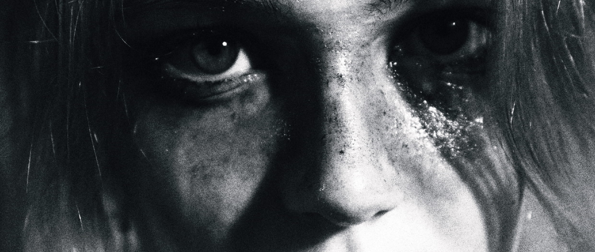

Portfolio numérique étudiante en design graphique et numérique. Identité visuelle, édition, typographie, photographie, web design...

Mon travail graphique s'oriente avant tout autour de la narration, la poésie
visuelle et le rythme donné sur l'ensemble des projets. à l'image du conte,
j'y explore des questionnements, des sensations, je tente de toucher à l'intime
même pour des projets plus terre-à-terre ou très cadrés.
Mon champs de référence est assez ouvert, mais mes inspirations puisent surtout dans la littérature. Mes projets naissent souvent d'un récit, d'un texte, d'une écriture. Mais je m'intéresse également à la cartographie pour structurer l'information et imaginer le pacours du spectateur, sa façon de s'approprier
le projet.
Je m'appuie aussi aux notions de l'intime, la psychologie et la psychanalyse, l'art brut et les pratiques marginales, les sciences humaines, la philosophie, l'observation du vivant, l'art textile et la topographie.
Ma pratique se concentre pour le moment autour de l'éditorial, l'identité
visuelle, la typographie et la photographie, mais étant très ouverte à l'expérimentation, j'ai ainsi pu toucher au textile, à la vidéo ainsi qu'au
web design.